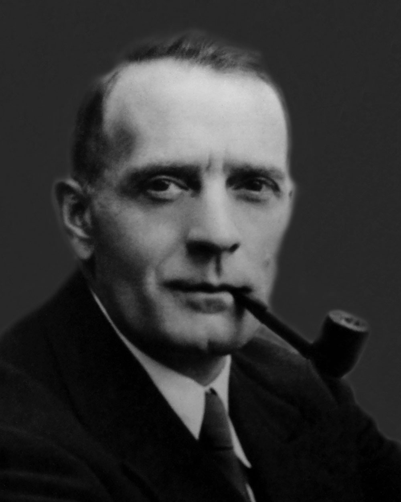

Who is...
Edwin Powell Hubble (November 20, 1889 – September 28, 1953) was an American astronomer. He played a crucial role in establishing the fields of extragalactic astronomy and observational cosmology. Hubble proved that many objects previously thought to be clouds of dust and gas and classified as "nebulae" were actually galaxies beyond the Milky Way. He used the strong direct relationship between a classical Cepheid variable's luminosity and pulsation period (discovered in 1908 by Henrietta Swan Leavitt) for scaling galactic and extragalactic distances. Hubble provided evidence that the recessional velocity of a galaxy increases with its distance from the Earth, a property now known as Hubble's law, although it had been proposed two years earlier by Georges Lemaître. The Hubble law implies that the universe is expanding. A decade before, the American astronomer Vesto Slipher had provided the first evidence that the light from many of these nebulae was strongly red-shifted, indicative of high recession velocities. Hubble's name is most widely recognized for the Hubble Space Telescope, which was named in his honor, with a model prominently displayed in his hometown of Marshfield, Missouri.
Career
In 1919, Hubble was offered a staff position at the Carnegie Institution for Science's Mount Wilson Observatory, near Pasadena, California, by George Ellery Hale, the founder and director of the observatory. Hubble remained on staff at Mount Wilson until his death in 1953. Shortly before his death, Hubble became the first astronomer to use the newly completed giant 200-inch (5.1 m) reflector Hale Telescope at the Palomar Observatory near San Diego, California. Hubble also worked as a civilian for U.S. Army at Aberdeen Proving Ground in Maryland during World War II as the Chief of the External Ballistics Branch of the Ballistics Research Laboratory during which he directed a large volume of research in exterior ballistics which increased the effective firepower of bombs and projectiles. His work was facilitated by his personal development of several items of equipment for the instrumentation used in exterior ballistics, the most outstanding development being the high-speed clock camera, which made possible the study of the characteristics of bombs and low-velocity projectiles in flight. The results of his studies were credited with greatly improving design, performance, and military effectiveness of bombs and rockets. For his work there, he received the Legion of Merit award
Awards
- Newcomb Cleveland Prize in 1924
- Bruce Medal in 1938
- Franklin Medal in 1939
- Gold Medal of the Royal Astronomical Society in 1940
- Legion of Merit for outstanding contribution to ballistics research in 1946
Namesakes